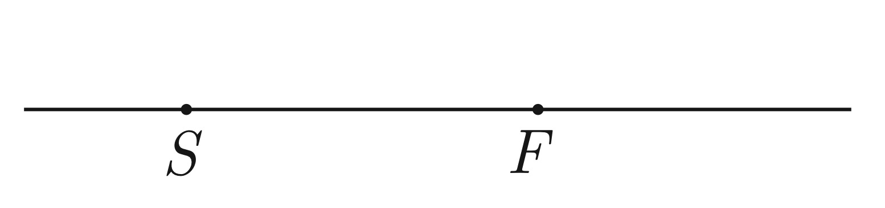

X20 (2020) — English translation
A charged point source of light moves along an elliptical orbit in the field of charge $S$. Charge $S$ lies on the optical axis of the lens, $F$ is one of its focuses. It turned out that one of the focal points of the lens is the center of the elliptical orbit. The trajectory of the source image in the lens consists of two parts: one part is an arc of a circle with its center at the center of the lens, the other is a kind of curve.

Source: https://pho.rs/p/16